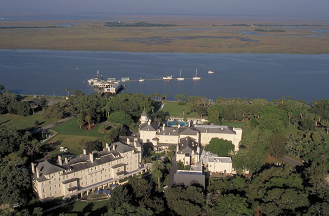
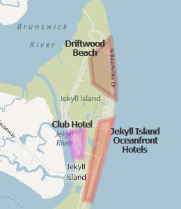
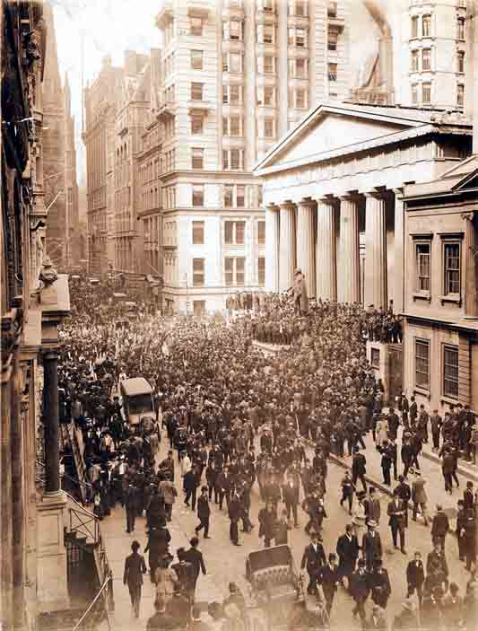
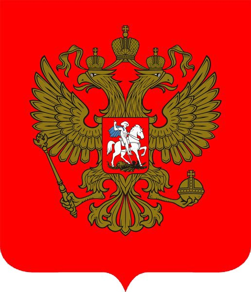

How the Federal Reserve Started
Wisdom-Square › Follow The Money › How the Federal Reserve StartedThomas Jefferson was one of the greatest men in American history. But, he did something incredibly that most people have no clue about. Jefferson and the patriots vowed to stop the evil tyrants (the Rothschild family) at all costs from taking over America. He was quoted for saying:
“I am not among those who fear the people. They, and not the rich, are our dependence for continued freedom.” - Letter to Samuel Kerchival, 1816
“If the American people ever allow private banks to control the issue of their currency, first by inflation, then by deflation, the banks and corporations that will grow up around them will deprive the people of all property until their children wake up homeless on the continent their Fathers conquered.” - Letter to Treasury Secretary Albert Gallatin, 1802
“I place economy among the first and most important virtues, and public debt as the greatest of dangers to be feared.... To preserve our independence, we must not let our rulers load us with perpetual debt.... We must make our choice between economy and liberty or profusion and servitude.... If we run into such debts, we must be taxed in our meat and drink, in our necessities and our comforts, in our labors and in our amusements.... If we can prevent the Government from wasting the labors of the people, under the pretense of caring for them, they will be happy.” - Letter to William Plumer, 1816
“It is incumbent on every generation to pay its own debts as it goes. A principle which if acted on would save one-half the wars of the world.” - Letter to Antoine Louis Claude Destutt de Tracy, 1820
Without a doubt, Jefferson was an incredibly great man. But Nathan Rothschild’s agents argued that our country needed a central bank to control our country’s finances. Once again, see how incredibly powerful spinning words around can be? Put that way it doesn’t sound half bad. Oh and the specific “agent” that argued against Jefferson like that was actually our first secretary of treasury, Alexander Hamilton (you might recognize him on the $10 bill). Great guy. Back on track, this is why Aaron Burr, Jr. (Thomas Jefferson’s vice-president) in 1804 during his last full year of his single term shot and killed Alexander Hamilton in a duel. Not something likely taught in schools. Although because of this Burr was never able to hold office again, all of his charges were dropped for this illegal duel. Guess he had a lot of supporters.
The first attempt of a central bank only lasted 20 years, and we shut it down. The bankers tried again, this time against President Andrew Jackson. Jackson was ruthless, and did not let the bankers win during his lifetime at all. He was quoted for saying:
“The bold effort the present (central) bank had made to control the government ... are but premonitions of the fate that await the American people should they be deluded into a perpetuation of this institution or the establishment of another like it.”
“From the earliest ages of history to the present day there have never been thirteen millions of people associated in one political body who enjoyed so much freedom and happiness as the people of these United States. You have no longer any cause to fear dangers from abroad ... It is from within, among yourselves - from cupidity, from corruption, from disappointed ambition and inordinate thirst for power - that factions will be formed and liberty endangered ...”
“It is to be regretted that the rich and powerful too often bend the acts of government to their selfish purposes.”
“You are a den of vipers and thieves. I intend to rout you out, and by the grace of the Eternal God, will rout you out.” (speaking about the central bankers / Rothschild family and their agents)
“If congress has the right under the Constitution to issue paper money, it was given to be used by themselves, not to be delegated to individuals or corporations.”
He actually survived an assignation (certainly a hired assassin from the “central bankers”) and then went on to defeat the bank in 1836. While lying on his death bed, he was asked what the greatest accomplishment in his life was… he responded, "I killed the bank"
Those were his last words. Now, with real money backed by real gold, our country experienced the greatest boom in any nation’s history. But the bankers never gave up. They wanted more power and wealth, and refused to stop until they got just that. So in the November of 1910, a secret meeting was held in the estate of J.P. Morgan (a club hotel for the extremely wealthy) on Jekyll Island, off the coast of Georgia (you might recognize this island in the ending scene of X-Men: First Class). This was following the Panic of 1907, where the New York Stock Exchange (now called the American Stock Exchange) fell almost 50% from its peak the previous year. Banking reform became a major issue in the United States. Senator Nelson W. Aldrich, chairman of the National Monetary Commission, went to Europe for almost two years to study that continent’s banking systems. Can you begin to smell the trouble? Upon his return, he brought together the Assistant Secretary of the U.S. Treasury Department, A. Piatt Andrew, and five of the country’s leading financiers: Frank Vanderlip (president of the National City Bank of New York), Henry P. Davison (senior partner of J.P. Morgan Company), Charles D. Norton (president of the Morgan-dominated First Nation Bank of New York), Benjamin Strong (representing J.P. Morgan), and Paul Warburg (a naturalized German representing Kuhn, Loeb & Co. which was a partnership between John M. Schiff and Harvey M. Krueger dealing with investment banking/management and finance) to discuss the monetary policy and the banking system, which ultimately lead to the creation of the Federal Reserve. Along with the creation of personal income tax, the goal was to once again to try and create a centralization of banking control and a bottomless source of credit for the U.S. Congress… all so that these “elite few” could gain their endless profit and control above the laws.
|
 |
 |
Together they represented about one fourth of the world’s wealth at the time. That night, they boarded a train in complete secrecy in Hoboken, New Jersey headed to Jekyll Island. They dropped their last names and instead used either their first names or even code names, so no one would discover who they all were. Their excuse for all riding this train together was to go on a duck hunting trip on Jekyll Island. Also, it’s kept secret that these members were in attendance as well: J.D. Rockefeller (richest man in America at the time) Thomas Lamont (member of J.P. Morgan Company, and the U.S. Treasury’s advisor to the American Peace Delegation in Paris… negotiators of the Versailles Treaty that ended WWI) and Nathan Mayer Rothschild (this is the “original” Nathan Rothschild’s grandson, who he was named after) or Walter Rothschild (the great grandson). In total, these are the 10 secret members that attended this meeting. Bertie Charles Forbes (Forbes magazine’s founder) was quoted for saying this to explain the events:
“Picture a party of the nation's greatest bankers stealing out of New York on a private railroad car under cover of darkness, stealthily riding hundred[s] of miles South, embarking on a mysterious launch, sneaking onto an island deserted by all but a few servants, living there a full week under such rigid secrecy that the names of not one of them was once mentioned, lest the servants learn the identity and disclose to the world this strangest, most secret expedition in the history of American finance. I am not romancing; I am giving to the world, for the first time, the real story of how the famous Aldrich currency report, the foundation of our new currency system, was written... The utmost secrecy was enjoined upon all. The public must not glean a hint of what was to be done. Senator Aldrich notified each one to go quietly into a private car of which the railroad had received orders to draw up on an unfrequented platform. Off the party set. New York's ubiquitous reporters had been foiled... Nelson (Aldrich) had confided to Henry, Frank, Paul, and Piatt that he was to keep them locked up at Jekyll Island, out of the rest of the world, until they had evolved and compiled a scientific currency system for the United States, the real birth of the present Federal Reserve System, the plan done on Jekyll Island in the conference with Paul, Frank, and Henry... Warburg is the link that binds the Aldrich system and the present system together. He more than any one man has made the system possible as a working reality.”
As these people argued who would run the new central bank, Rothschild explained to them that no one is going to run the bank. In the past the idea of a central bank kept failing because of their openness. This time they would kept their real motive a secret and get the people to believe that they own the bank (they did this by naming their private bank the “Federal Reserve”). The method to actually make all of this work was to first create panic, (i.e. the great depression) and to then show the public this (central banking system) as their only solution. With their men in office and perfect timing, the Rothschild family was finally able to pull this off and gain control of America’s economy. They struck on December 23, 1913… only one month after their secret meeting. They had their newly elected accomplish, President Woodrow Wilson, sign their treasonous act (the Federal Reserve Act and the 16th Amendment for the I.R.S. to be established). He also agreed to sign before he was even elected. And yes, that’s right the I.R.S. didn’t always exist and just serves as the Federal Reserve’s “security” to make sure that every citizen pays what they “owe” to them. Now you know the type of people that created the I.R.S. and what it’s really for. The “Fed” now has the exclusive power to print U.S. money, which they then loan to our banks at interest, putting immediate debt on our own money.
|
 |
 |
I wonder why we’re never taught about the history of our country’s most powerful financial institution. Well, maybe I can take a guess. See most people have no clue about this, but now you do. Oh and that’s not even all of it, this “system” facilitated the U.S. government’s ability to inflame the nation’s citizens for the purpose of supporting the European war of 1914-1918 (World War I). See, warfare provides a source of immense borrowing and provides banking corporations with huge profits in the form of interest income. Several of these same “wall street banks” financed Adolph Hitler two decades later as well. To read the conclusion of this topic, and see where we are today with all of this please click here.
This last article will be the most important one to read; since it will go into what could happen in the future and actual things that you can start doing instead of just become angry from learning all of this. These people have no limit to their greed for power and control, but with an educated population we can regain control.
Wisdom-Square › Follow The Money › How the Federal Reserve Started